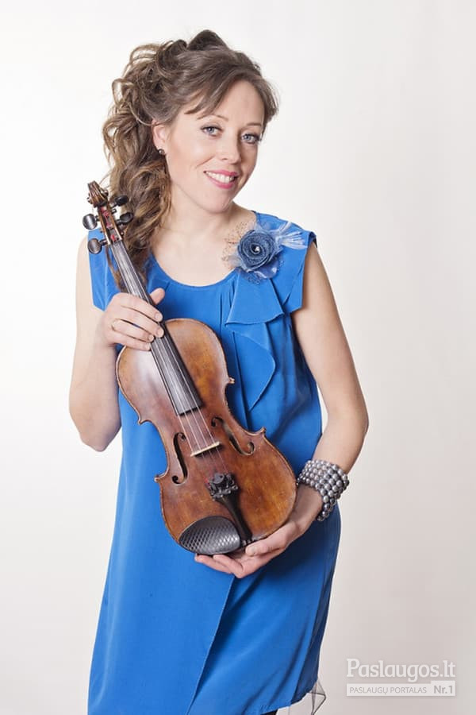

Praleisti meniu Meniu Paieška Programa Įkelk Apie LRT lt lt Lietuvių en English ru русский Mediateka Lietuvoje Verslas LRT tyrimai Pasaulyje Sveikata Eismas Sportas Mokslas ir IT Kultūra Veidai Muzika Gyvenimas Tavo LRT Eurovizija Lituanica LRT ieško sprendimų Naujienų rentgenas Dainų dainelė Draugystė veža Auksinis protas Daugiau LRT.LT Tema Fortepijonas
#Fortepijonas
4
Euroradijo koncertas
2020.10.13 23:15
Euroradijo koncertas. Marco-André Hamelino rečitalis 2020 m. festivalyje „Juodais ir baltais klavišais“ Brėmene
4 26:14 135
Tarp dalių (ne)plojama
2020.09.05 10:30
Tarp dalių (ne)plojama. Pramintas „karališkuoju“ ir „instrumentu-orkestru“ – fortepijono istorija ir subtilybės
135 05:19 68
Kultūros klubas
2020.08.01 09:00
Kultūros klubas. Fortepijono maratonas Beethovenui
68 10
Kultūra
2020.07.31 21:59
Tarpukarį pamilusi Andrijana Filinaitė: Kaune yra dar daug neatrastų architektūros perlų
129 10 29:36 300
Euromaxx
2020.05.31 14:28
Euromaxx. Vertikalus 6 metrų aukščio fortepijonas Ventspilyje, skambantys pjūklai ir pilies statybos Prancūzijoje
300
Muzika
2020.05.27 13:42
Išgirskite: lietuvių pamėgtas „greičiausias pasaulio pianistas“ Peteris Bence'as pristato debiutinį albumą
Kultūra
2020.04.30 11:38
Mūza Rubackytė: jei publika vynioja saldainių popieriukus, tai – mano bėda
32 43:03 457
C'mon, Nemira
2020.04.28 12:12
C'mon, Nemira. Vaikystę prisimenanti pianistė Mūza Rubackytė: aš nenorėjau žaisti su lėlėmis, norėjau žaisti su instrumentu
457 43:10 185
Labas rytas, Lietuva
2020.04.07 08:53
Į koncertą eiti nebereikia: pianisto Gintaro Januševičiaus pasirodymą galima išgirsti pro atvirą langą
68 185
Lietuvoje
2020.03.11 08:28
Gražiną Ručytę-Landsbergienę prisimenant: svajojusi apie solinę karjerą, iškeitė ją į šeimą
78 51:35 26
Man patinka džiazas
2020.02.26 15:05
Man patinka džiazas. Vienos savaitės atradimai: Dainiaus Pulausko fortepijoninis trio ir Marijaus Aleksos mažasis Londonas Vilniuje
26 00:55 30
Ar žinai, kad
2020.02.13 12:10
Ar žinai, kad. Koks buvo vienas brangiausių fortepijonų visame pasaulyje?
30 5
Kultūra
2019.11.26 19:27
Mūza Rubackytė: per dažnai tapatiname moteris su šypsena, linksmybėmis ir mažomis rankutėmis
402 5 51:12 367
Muzikinė dėžutė
2019.09.07 09:05
Muzikinė dėžutė. Linksmasis orkestras.
22 367 87
10–12
2019.09.06 10:05
10–12. Apie neįgyvendintas svajones: rugsėjis – būrelių pasirinkimo metas ne tik vaikams, bet ir suaugusiems
8 87 5
Gyvenimas
2019.08.04 13:22
Ukrainiečių muzikantų sumanumas: pasigamino netradicinį fortepijoną, atstojantį 20 skirtingų instrumentų
žiūrėkite reportažą 5
Kultūra
2019.07.27 19:18
Instrumento evoliucija: Latvijoje įrengtas didžiausias pasaulyje fortepijonas
21 25:42 354
Euromaxx
2019.07.27 18:00
Euromaxx. Nuo būgno iki kastanjetės: muzikos grupė „Brunettes Shoot Blondes“ vienu fortepijonu išgauna dvidešimties instrumentų garsus
354 166
Čiurlionis kitaip
2019.07.20 23:09
Čiurlionis kitaip
166 5
Kultūra
2019.05.30 19:35
„Steinway and Sons“ ir Hamburgo filharmonijos sandėris: perki fortepijoną – žvaigždė į namus
5
Veidai
2016.05.19 16:00
Italų pianistas siūlo klausytis koncerto gulint po fortepijonu
Kultūra
2015.11.12 21:03
Vilniaus fortepijono muzikos festivalyje – duetų koncertai
Mauris vitae nisl nec metus placerat perdiet est. Phasellus dapibus semper urna. Pellentesque ornare, orci in consectetuer hendrerit, volutpat.
Pellenteque ornare

Fortepijonai | Instrumentai | Klavišiniai instrumentai ... fortepijonas, ranka, muzika Public Domain. License to use Creative Commons Zero - CC0. fortepijonas; ranka; muzika; Matmenys 6016x4016; Failo dydis 2.43MB ; Rezoliucija 5K ; Įkėlimo data 2017-10-30 ; Peržiūros 46 ; Atsisiuntimai 24 ...
Fortepijonas - LRT Erdvę taupantis, puikaus skambesio, mažas fortepijonas ( A91/ P136/G55 CM, svoris 150 kg). Tarp „Art Deco“ ir „Bauhaus“: Sukurtas Ferdinando Manthey ir gaminamas buvo 1960s/1970s iki 1983metų.
Fortepijonas - Unijapedija Fortepijonas – nuostabus muzikos instrumentas, pasižymintis gražiu tembru, plačiu diapazonu, įvairaus repertuaro atlikimo galimybėmis. Nuoširdžiai stengiuosi, kad mano mokiniai pamiltų šį instrumentą ir, baigę lankyti pamokas, neuždarytų fortepijono dangčio visam laikui.
fortepijonas, 4 puslapis - išsamiai DELFI.lt Fortepijonas – klavišinis muzikos instrumentas, dažniausiai naudojamas koncertams. Jo vibratorius – stygos. Kad stygos pasidarytų tamprios, reikia jas iš anksto viena kryptimi įtempti. ...
Fortepijonas - lm Fortepijonas kaip progreso auka ; Ar kada pagalvojote apie kelią, kurį turi pereiti atskiri, kasdieniai objektai, kurie supa mus kasdieniame gyvenime?> Jei apie tai negalvojote ar jums tiesiog nuobodu su istorija, aš iškart jus perspėsiu perskaityti: taip, bus datų ir jų bus daug. faktai, kuriuos pabandysiu padaryti, kiek mano kuklios galios, nėra tokie sausi, kaip jų mokytojai teigė ...
Fortepijonas - Kūdikiai Fortepijonas – klavišinis muzikos instrumentas, dažniausiai naudojamas koncertams. Jo vibratorius – stygos. Kad stygos pasidarytų tamprios, reikia jas iš anksto viena kryptimi įtempti. Fortepijonas išsiskiria dideliu diapazonu, turtingu tembru ir judria skambesio dinamika.
Fortepijonas – RUDAMINOS MENO MOKYKLA Fortepijonas ir Klavikordas · Žiūrėti daugiau » Koncertas. Klasikinės muzikos koncertas Australijoje Koncertas – gyvas pasirodymas, įprastai muzikos, prieš auditoriją. Nauja!!: Fortepijonas ir Koncertas · Žiūrėti daugiau » Oktava. Muzikoje oktava yra vadinamas intervalas tarp dviejų garsų, kurių dažniai skiriasi du kartus ...
Fortepijono istorija pasaulio progreso kontekste ... fortepijonas - klavišinis styginis instrumentas, didesnis nei pianinas.Jis dažnai naudojamas koncertuose ir kituose viešuose renginiuose. Vertimai [] fortepijonas: klavišinis styginis instrumentas
fortepijonas - išsamiai DELFI.lt Kategorija: Fortepijonas Išsilavinimas. Ingrida Dirmienė baigė Lietuvos muzikos ir teatro akademiją. Darbo patirtis. Nuo 1991 metų dirba Utenos muzikos mokykloje fortepijono mokytoja, koncertmeistere. 1998 metais suteiktas mokytojos metodininkės vardas. 1996 – 2006 m. - fortepijono skyriaus vedėja.